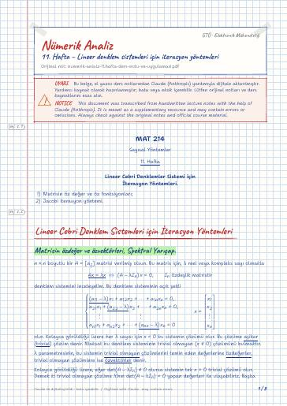

Nümerik Analiz · Dijital ders notu
11. Hafta – Lineer denklem sistemleri için iterasyon yöntemleri
- Ders
- Nümerik Analiz (MAT214)
- Dönem
- 3. Dönem · 2022–2023 Güz
- Biçim
- PDF · 8 sayfa · 0,1 MB · el yazısı görünümlü LaTeX
- Orijinal not
- numerik-anlaiz-11.hafta-ders-notu-ve-uygulamasi.pdf

The digital notes were created from the handwritten notes with the help of Claude (Anthropic); they are meant as a supplementary resource and may contain errors. Always rely on the original notes and the official course materials.
Bu notta neler var?
- Lineer Cebri Denklem Sistemleri için İterasyon Yöntemleri
- Matrisin özdeğer ve özvektörleri, Spektral Yarıçap
- Yakınsak Matrisler
- Lineer Cebri Denklem sistemi için Jacobi iterasyon yöntemi
- Sorular
Notun metni
Düz metin olarak göster (formüller ve çizimler yoktur)
denklem sistemini inceleyelim. Bu denklem sisteminin açık şekli
olur. Kolayca görüldüğü üzere her λ sayısı için x=0 bu sistemin çözümü olur. Bu çözüme
aşikar (trivial) çözüm denir. Maksat bu denklem sisteminin trivial olmayan
λ parametresinin, bu sistemin trivial olmayan çözümlerini temin eden değerlerine
özdeğerler, trivial olmayan çözümlere ise özvektörler denir.
Kolayca görüldüğü üzere, eğer (A-λ I_n)≠ 0 olursa sistemin tek x=0 trivial çözümü olur.
Demek ki trivial olmayan çözüme λ 'nın (A-λ I_n)=0 yapan değerleri ile ulaşabiliriz.
polinomu dersek, bu polinomun sıfırlarına A matrisinin özdeğerleri denir:
denklemlerinin çözümleri A matrisinin özdeğerleridir.
Eğer λ sayısı A matrisinin bir özdeğeri ise
sisteminin trivial olmayan ( x≠ 0 ) çözümleri bu özdeğere karşı gelen özvektörler olur.
Böylece n× n boyutlu A=[a_ij] matrisinin özdeğer ve özfonksiyonlarını aşağıdaki aşamalarla bulabiliriz:
(A-λ I)=0 denklemini çözerek, A matrisinin λ özdeğerleri bulunur;
denklem sistemini çözmekle, λ özdeğerine karşı gelen x≠ 0 özvektörleri bulunur;
Aşağıdaki matrislerin özdeğer ve özvektörlerini bulunuz
A matrisinin iki λ_1=i ve λ_2=-i özdeğerleri vardır.
Böylece, λ_1=i özdeğerine karşı gelen özvektör 'dir
λ_2=-i özdeğerine karşı gelen özvektör 'dir
A matrisinin birisi iki katlı olmakla 2 sayıda λ_1,2=2, λ_3=3 özdeğeri vardır.
λ_1,2 =2 özdeğerine karşı gelen lineer bağımsız iki tane özvektör
λ_3=3 özdeğerine karşı gelen özvektör 'dir.
sayısına A matrisinin spektral yarıçap (radius) denir.
Örneğin a) A= matrisinin özdeğerleri
λ_1=i ve λ_2=-i olduğuna göre
olduğuna göre |λ_1,2|=2 ve |λ_3|=3 olduğuna göre Spektral yarıçap
n× n boyutlu A=[a_ij] matrisi için
[A^k]_ij ile A^k matrisinin i . satır ve j . sütun elemanını işaretleyelim.
olursa, diyorlar ki, A matrisi yakınsak matristir
A= matrisinin yakınsak matris olduğunu gösteriniz.
A matrisinin yakınsak olması, onun spektral yarıçapının
r(A)<1 olması ile gerek ve yeterdir.
Lineer Cebri Denklem sistemi için Jacobi iterasyon yöntemi.
n× n boyutlu A=[a_ij] matrisi verilsin, öyle ki, a_ii≠ 0 olsun.
denklem sisteminin çözümü için (iteratif) yöntem verelim.
1. denklemin her tarafına a_11 , 2. denklemin her tarafına a_22 ve s. n . denklemin her tarafına a_nn 'le bölürsek
Şeklinde veya kısaca
denklem sistemini elde ederiz.
Başlangıç iterasyon olarak
alırsak (veya x^(0) olarak keyfi bir vektör de alınabilir)
Şeklinde iterasyon belirleyebiliriz. Bu iterasyona Jacobi iterasyonu denir. k iterasyon adımıdır.
denklem sistemi için x^0=0 olmakla Jacobi iterasyon yöntemi uygulayarak ilk 2 iterasyonu bulunuz
1. denklemi 3 ile, 2. denklemi 6 ile ve 3. denklemi 7 ile bölerek sistemi aşağıdaki şekilde yazabiliriz
Şimdi Jacobi iterasyonunu belirleyelim:
Şimdi Jacobi iterasyon formülünü matris-vektör şeklinde verelim. Bunun için A matrisini
Şeklinde yazalım. Bu durumda
olur. a_ii≠ 0, i=1,…,n olduğuna göre D≠ 0 olur ve demek ki, tersi vardır: Her tarafı D^-1 'le çarparsak
Başlangıç iterasyon olarak x^0=0 alırsak, bu denklem üzerinden
Şeklinde iterasyon belirleyebiliriz.
T_J matrisine Jacobi matrisi denir.
Örneğin bir önceki örnekteki
Aşağıdaki matrislerin özdeğer ve özfonksiyonlarını bulunuz:
Ayrıca bu matrislerin spektral yarıçaplarını hesaplayınız.
Sistemini x^(0)=0 olmakla Jacobi iterasyonu kullanarak ilk iki iterasyonunu bulunuz. Jacobi matrisini bulunuz.